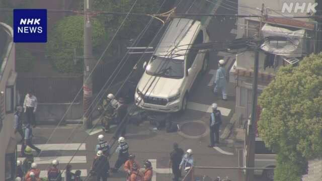

世界苦茶05月02日新闻 | 31条 | 特朗普免除国家安全顾问Waltz职务

特朗普免除国家安全顾问Waltz职务 | 特朗普对俄罗斯态度发生转变 | 美国参议院暂缓关税表决 | 日本大阪發生隨機撞人事件 | 全球最年长女性记录锁定在116岁
三个水枪手
苦茶数据
美元兑人民币：7.25（昨日7.28，前日7.26）
美元兑日元：145.25（昨日144.09，前日142.50）
上证指数：休市（昨日3279，前日3283）
标普500指数：5604（昨日5569，前日5528）
比特币：97172（昨日95146，前日94024）
布伦特原油：62.51（昨日61.09，前日65.45）
中国新闻
• 王毅会晤卢拉促合作 ：中共中央政治局委员、中国外交部长王毅在与巴西总统卢拉会面时强调，中国将同全球南方国家合作，坚守多边主义。据中国外交部官网消息，王毅当地时间星期三在巴西利亚与卢拉会面。王毅表示，中方坚决反制单边霸凌行径，不仅是在维护自身正当权益，也是在维护发展中国家共同利益，捍卫国际公平正义。
• 中使馆办反绑架讲座 ：中国驻菲律宾使馆举办海外公民反绑架专题知识讲座，帮助在菲中国公民提高安全防范意识和能力。据中国驻菲律宾大使馆网站消息，使馆星期三联合菲中爱心基金、马尼拉华助中心在菲华商联总会举办“旅菲平安 携手相伴”海外公民反绑架专题知识讲座。中国驻菲律宾大使黄溪连发表书面致辞说，近段时间菲律宾社会治安不靖，在菲中国公民和机构面临的安全风险上升。大使馆高度重视并密切关注，专门发布领事通告提醒在菲及拟赴菲中国公民加强安全防范。
• 韩称中方偷拍敏感设施 ：韩国国家情报院星期三称，从去年6月至今，中国人在韩国境内擅自拍摄敏感设施的事件累计11起。据韩联社报道，国情院星期三在韩国国会情报委员会的闭门座谈会上报告上述消息。国情院称，拍摄对象主要是韩军部队、机场港湾设施、国情院办公楼等军事设施及国家重要设施。拍摄人员大部分为游客或留学生，还包括高中生等未成年人。
• 美议员警告中制飞机 ：美国一名议员告诫爱尔兰廉价航司瑞安航空，以安全考量为由不要购买中国制造的飞机。据路透社报道，美国众议员克里希纳穆尔蒂在星期二致函瑞安航空）首席执行官奥利里的信中称，中国商飞与中国军方关系密切。克里希纳穆尔蒂写道：“恕我直言，美国和欧洲的航空公司甚至不应该考虑在未来从中国军工公司购买飞机。”
• 南京医院院长遭砍伤 ：中国南京一家医院的院长遭人砍伤，目前已脱离危险。中国《经济观察报》引述消息人士报道，南京鼓楼医院院长于成功星期一被人砍伤。行凶者长期尾随于成功，4月28日夜间携带凶器尾随于成功至家中，将于成功及其妻子砍成重伤。知情人士称，目前未发现于成功接诊过该行凶者，行凶者也并非传闻中与于成功家人有情感纠纷的人士。
亚太印太新闻
• 泰国入境系统遭仿冒 ：泰国线上出入境系统星期四启用，系统向外国游客开放的当天，就发现首个假冒网站。泰国数码入境卡，取代传统纸质入境和出境表格，旨在简化泰国旅行流程，推动旅游业发展。线上TM 6系统要求外国公民在赴泰前，通过线上方式注册个人详细信息。所有通过空中、海上或陆路进入泰国的外国公民都必须遵守该规定。《曼谷邮报》报道，假冒网站声称为官方的第三方服务提供商，要求用户支付UScopy0的处理费，而真正的网站是免费的。
• 赖清德推动劳工政策 ：台湾总统赖清德五一劳动节在社交平台发文称，政府未来将通过加薪减税提升劳工权益。赖清德星期四在脸书写道，感谢所有劳工在不同领域上展现专业，为台湾注入更多活力。政府未来将继续强化产业韧性，打造更坚实稳固的台湾，并持续推动各项政策，提升劳工权益。他介绍，政府今年连续第九年调升基本工资，接下来要透过完善劳动基准、职业训练以及劳资合作，鼓励企业加薪、打造稳定且永续发展的劳动环境。政府透过减税让劳工家庭的可支配所得提高。报税季当天开跑，政府再提高免税额，如单身者年薪低于44万6000元新台币可以免税。
• 韩国检方再诉尹锡悦 ：韩国检方星期四对遭罢免的前总统尹锡悦追加一项起诉，指控他滥用职权。综合韩联社和新华社报道，韩国检察厅紧急戒严特别调查本部周四说，对尹锡悦进行了不羁押起诉。检方说，将对相关嫌疑展开彻底调查。去年12月3日，尹锡悦发布紧急戒严令。1月26日，韩国检察厅紧急戒严特别调查本部以“涉嫌发动内乱”拘留起诉尹锡悦。尹锡悦成为韩国宪政史上首位被起诉的现任总统。
• 韩财长辞职避弹劾 ：韩国经济副总理兼企划财政部长官崔相穆5月1日晚突然宣布辞职，并得到代总统兼国务总理韩德洙批准。国会全体会议当晚原定就弹劾崔相穆投票，但因崔相穆辞职，投票未举行。弹劾案指控时任代总统崔相穆不任命宪法法院法官马恩赫侵犯国会权力。此外，由于韩德洙和崔相穆相继辞职，分管社会事务的副总理兼教育部长官李周浩将接任代总统。
• 马来西亚医生将游行 ：马来西亚政府强制私人医疗机构公布药品价格的措施星期四生效，私人全科医生决定下星期二游行至首相署以示抗议。《东方日报》报道，据马来西亚医药协会在X平台发布的宣传海报，这场抗议活动由协会的全科医生分会主办，预计从下星期二上午10时开始，届时一众私人医生将聚集在布城的卫生部大楼外。分会主席帕姆吉特星说，这是一场依法进行的和平游行，主办方将事先取得所有必要的批准。
• 大阪男子驾车撞学生 ：日本大阪西成区5月1日下午有人驾车冲撞7名小学生，7名伤者均有意识。肇事司机名叫矢泽勇希，28岁，东京出身，无业，其供述称“因为厌烦一切，想杀人就开车撞了人”，警方以涉嫌“故意杀人未遂”将其逮捕。
科技新闻
• 苹果被判赔5亿专利费 ：英国伦敦上诉法院周四裁定，苹果公司必须就其在包括 iPhone 和 iPad 等设备上使用4G专利，向一家美国专利持有方支付5.02亿美元。总部位于得克萨斯州的Optis蜂窝技术有限责任公司于2019年在伦敦起诉苹果，原因是苹果使用了Optis称对4G等某些技术标准至关重要的专利。伦敦高等法院在2023年裁定，苹果公司应向 Optis 支付总计5643万美元及利息，以涵盖特定时期内过去和未来的产品销售。
• 微软上调Xbox价格 ：微软正在全球范围内提高其 Xbox Series S/X 主机、Xbox 控制器甚至部分新 Xbox 游戏的价格。即日起，微软表示已调整其 Xbox 主机和控制器的建议零售价，其中 Xbox Series X 价格上调100美元至599.99美元。微软还计划在今年假日季调整其部分新的第一方 Xbox 游戏价格，最高至79.99美元。
• Meta AI或推付费版 ：Meta AI应用可能很快将会推出付费版，类似于OpenAI、谷歌和微软等竞争对手提供的版本。Meta公司首席执行官马克·扎克伯格在周三的2025年第一季度财报电话会议上描述了该计划，表示有机会在 Meta AI 中为“想要解锁更多计算能力或附加功能的用户提供高级订阅服务”。Meta 公司本周推出了一款独立的 Meta AI 应用，允许用户与聊天机器人互动并在应用内生成图像。
• 英伟达猛烈抨击Anthropic称其胡说八道： 英伟达公司周四在一次围绕人工智能政策的罕见公开冲突中抨击Anthropic，此时美国芯片出口限制措施即将生效。英伟达公司发言人表示：“美国公司应该专注于创新并迎接挑战，而不是编造荒诞的故事，声称大型、沉重和敏感的电子产品是通过‘假孕妇’或‘活龙虾一起’被走私。”人工智能公司 Anthropic 主张加强管控和执法，并在周三的一篇博客文章中表示，中国的走私手段包括芯片藏在‘假孕妇‘或‘与活龙虾一起打包’。前总统拜登任期内的芯片限制措施，即“人工智能扩散规则”，将于5月15日生效。这项规则对先进的人工智能芯片和模型权重实施全球出口管制。
财经新闻
• 马斯克或被特斯拉替换 ：美国电动车公司特斯拉内部人士透露，在公司股价走跌、业绩大幅下滑的同时，公司首席执行官马斯克将心力放在白宫事务，让董事会不得不开始认真考虑寻找下一任接班人。《华尔街日报》引述消息人士报道，在大约一个月前，特斯拉董事会已与多家猎头公司接触，正式展开寻找接班人的程序。马斯克虽也是特斯拉董事之一，但目前尚不清楚他是否知晓公司的换人计划。消息人士透露，近来特斯拉内部紧张情势升高，销售与利润快速下滑，马斯克则花大量时间待在华盛顿，协助美国总统特朗普主导联邦政府大幅削减开支。针对这一情况，董事会已在上个月与马斯克会晤，明确要求他必须回归特斯拉本业。据悉马斯克当时并未反对。
• 特斯拉法国销量腰斩 ：四月，特斯拉在法国的销量暴跌59%，这对美国总统特朗普的亿万富豪顾问马斯克经营的电动车公司而言无疑是另一个坏消息。法国汽车制造商协会将四月的注册数据与去年同期进行比较，结果还显示，自2025年初以来，法国的特斯拉注册量为7556辆，比2024年同期下降了44%。特斯拉在法国销量的下滑是由于法国四月电动车销量停滞不前，整体汽车销售量下降 5.64%，总注册量为139000辆。法国汽车制造商协会主席勒比戈说：“我们的市场处于令人担忧的水平，与新冠肺炎疫情之前相比非常低”。他将法国买家的下滑，归咎于“经济不确定的情况”。
• 空客产量受阻忧关税 ：欧洲飞机制造公司空中客车第一季度财报显示供应链持续受阻抑制了飞机产量，同时这家飞机制造商警告称，关税进一步加剧了航空业的不确定性。空中客车在星期三发布的声明中重申，公司仍计划在今年交付约820架商用飞机，但该目标未将关税带来的影响纳入考虑，并假设“全球贸易或世界经济不会出现额外扰动”。空中客车说，今年的交付将集中在下半年，“反映出我们面临的特定供应链挑战”。作为全球最大的飞机制造商，空中客车从年初起便受到从发动机到客舱内部组件等零部件的供应限制。如今美国总统特朗普的关税政策可能加剧这些短缺问题。
• 中国文具出口美回暖 ：美国总统特朗普宣布对华加征对等关税即将满月之时，中国文具出口商的部分订单已恢复对美出口，关税则由美国客户承担。据《每日经济新闻》报道，特朗普政府4月初宣布对多国加征对等关税后，一批中国文具出口企业开始商议应对措施。在中美关税战打响的27天里，有企业加速海外工厂落地，也有企业打开更广阔的国际视角，将业务增长的驱动力聚焦在欧洲和“一带一路”国家及地区的市场之中。
• 美与多国谈判关税 ：美国正与多国就关税举行谈判。美国总统特朗普说，首批关税协议可能在几周内达成，而美国与印度、韩国和日本都有达成协议的潜在可能。特朗普星期三在NewsNation主办的活动中称，超过100个国家渴望与美国达成关税协议，但他不急于达成协议，因为美国正在从他征收的关税中获益。他重申，这些国家需要美国，而美国不需要它们。特朗普还说，看好协议很快达成，但强调若未能成事“我们就直接设定条件”。他指称，对于某些国家将直接设定40%、50%或60%的关税，而非先进行谈判再做衡量。
• 美参院暂缓关税表决 ：美国参议院星期三以50票同意、49票反对的投票结果通过了一项动议，暂时搁置一项涉及阻止总统特朗普对全球多国征收关税的表决要求。据美国媒体报道，这一投票结果意味着，参议院下周可能将再次就阻止特朗普关税进行投票表决。星期三较早时，参议院首先进行了一场有关阻止特朗普对全球多国征收关税的表决，表决结果一度维持49票赞成、49票反对的平票。
• 加总理将访美谈贸易 ：美国总统特朗普说，加拿大总理卡尼希望与美国达成贸易协议，并将于下周访问白宫。特朗普3月至今对多种加拿大进口商品加征关税。特朗普星期三在内阁会议后在白宫告诉记者，卡尼星期二打电话给他。“他昨天打电话给我，他说我们做个交易吧。”特朗普对加拿大祭出关税及扬言并吞，引发美加关系紧张。但他星期三形容卡尼非常友善，并宣告卡尼会在一周内访问白宫。
俄乌战争
• 泽连斯基说服特朗普 ：乌克兰总统泽连斯基与美国总统特朗普日前在教宗方济各葬礼期间短暂会面，展开历时15分钟的“历史性对话”。据美国媒体报道，泽连斯基通过这次谈话成功说服特朗普改变态度，对俄罗斯总统普京采取更强硬立场。泽连斯基和特朗普4月26日在教宗的葬礼举行前，于圣伯多禄大殿一对一面谈约15分钟。这是两人今年2月在白宫不欢而散后的首次会面。美国新闻网站Axios引述消息人士报道，特朗普在会上罕见承认“或许需要调整对普京的应对方式。”
• 朝俄深化军事合作 ：朝鲜最近公开的新型多功能驱逐舰“崔贤号”或在俄罗斯军事技术支援下建造，显示朝俄军事合作正迈向实质性深化。朝中社周三报道，朝鲜4月28日至29日连续两天在崔贤号上试射多型导弹与舰载武器，包括可搭载核弹头的“火山-31”战略巡航导弹、超音速巡航导弹、舰对舰导弹、反舰导弹、127毫米舰炮、舰载机关炮、电子干扰系统及烟幕发射器等。朝方称，此次测试旨在打造具备“第二次核打击能力”的海上平台。
• 特朗普在英法施压下对普京态度转硬： 据《Politico》5月1日报道，美国总统唐纳德·特朗普在经历数月来自英国首相基尔·斯塔默与法国总统埃马纽埃尔·马克龙的外交努力后，开始对俄罗斯总统弗拉基米尔·普京采取更强硬的言辞。该报道援引未具名的欧洲政府消息人士称，这一协调行动由英法高层官员主导，旨在劝说特朗普减少对乌克兰总统弗拉基米尔·泽连斯基的施压，转而对普京展开更多批评，理由是莫斯科的行为正在削弱特朗普作为谈判者的信誉。据称，英国国家安全顾问乔纳森·鲍威尔与国防大臣约翰·希利在其中发挥了关键作用，他们与美国驻英大使马克·伯内特密切合作。英国外交大臣大卫·拉米表示，今年他已与美国国务卿马可·鲁比奥进行了13次通话，而斯塔默与特朗普之间也有“几乎同样多”的直接对话。一位不愿透露姓名的前英国驻外大使表示，伦敦与巴黎持续向特朗普强调，普京“蔑视他”，不断违反他声称正推动执行的停火协议。
• 特朗普批准上任以来首笔5,000万美元对乌军售案： 据媒体报道，白宫近期已通知国会，计划通过“直接商业销售”方式，向乌克兰出口总额为5,000万美元的防务相关物资，这是特朗普重返白宫100多天以来首次批准此类军售。此前，特朗普政府曾暂停所有对乌援助，以重新审视其战略，并优先推进外交路径，而非长期军事支持。Tochnyi安全援助分析师科尔比·巴德瓦尔表示：“新闻的重点是，尽管外界普遍预测特朗普将完全切断对乌支持，但美国的军售实际上仍在继续。”不同于“对外军事销售”，DCS通常较为低调。自2015年以来，美国已批准超过16亿美元的此类对乌防务出口。根据最新的援乌法案，国会此前已批准超过10亿美元的DCS潜在销售额。新批准的许可涵盖防务装备、技术资料和服务。这一决定公布前不久，乌克兰总统泽连斯基刚刚宣布计划从美国采购多达500亿美元的防空和武器系统，作为未来安全保障的一部分。兰德公司学者迈克尔·塞西雷博士表示，持续的美方军事支持将增强华盛顿的影响力。他指出：“特朗普政府一再表达希望在乌克兰实现持久停火的愿望。实现这一目标，需要同时对基辅与莫斯科施加影响力。”
其他新闻
• 特朗普撤换国安顾问 ：美国总统特朗普免除国家安全顾问沃尔兹的职务，并由国务卿鲁比奥兼任临时国安顾问职位。路透社报道，此次人事变动是特朗普第二任期内首次对核心团队进行重大人事调整。沃尔兹3月被揭发错误将《大西洋》月刊总编辑戈德堡拉入协调打击也门胡塞武装的国安高层聊天群组，引发哗然。特朗普星期四在社交媒体表示，他将提名沃尔兹出任美国常驻联合国代表，并指沃尔兹“一直努力将国家利益放在首位”。美国常驻联合国代表的提名需经过参议院批准。
• 耶伦警告经济衰退风险 ：前美国联邦储备局主席耶伦警告，在美国总统特朗普对主要贸易伙伴实施的广泛关税措施扰乱了金融市场、消费者和企业后，美国经济衰退的风险已“大幅上升”。这位前美联储主席在接受英国《金融时报》采访时说，美国对主要贸易伙伴征收关税将对美国消费者和企业产生“极其不利的后果”。彭博社引述耶伦说：“我目前还不准备预测经济会陷入衰退，但几率肯定已经大幅上升。”她补充称，将目标瞄准中国商品可能制约关键矿产的供应，进而“削弱”美国的产业。
• 新西兰遭强风重创 ：新西兰首都惠灵顿星期四遭遇十多年最严重的强风天气，导致学校停课、航班取消，南岛部分地区则在经历24小时大雨后宣布进入紧急状态。政府预报称，惠灵顿的平均风速达到每小时87公里，为2013年以来最强。惠灵顿发布最高级别的红色大风警告，南岛部分地区，包括新西兰第二大城市克赖斯特彻奇（又称基督城）进入紧急状态。惠灵顿地区应急管理部门发言人尼利说：“这次的灾难肯定比惠灵顿平常的糟糕天气要严重得多。许多道路已被封锁。”
• 哈里斯批特朗普政策 ：美国前副总统哈里斯指美国总统特朗普创下现代总统史上最糟糕的人为经济危机，并认为国家的制衡正在崩坏，美国也面临宪政危机。哈里斯选在特朗普执政百日之后，于星期三在旧金山发表演说，对特朗普政府的执政表现做出批评。这也是哈里斯自去年11月总统大选后，首度发表重大的公开演说。美国商务部周三发布的数据显示，特朗普的关税政策引发的提前囤货潮和不确定性拖累了经济增长，今年第一季度美国经济环比萎缩0.3%。这是特朗普第二个总统任期的首份经济成绩单。预测人士认为，美国明年有50%概率会陷入衰退。
• 全球最长寿修女逝世 ：获健力士世界纪录认证为世界最长寿女性的巴西修女魯卡斯星期三逝世，享年116岁。魯卡斯生于1908年6月8日，是有记录以来第二长寿的修女。她110岁生日时曾获得罗马天主教教宗方济各的祝福。方济各4月21日安息主怀，享寿88岁。随着魯卡斯的离世，现在全球最长寿的女性，是115岁、来自英格兰萨里郡的凯特勒姆。